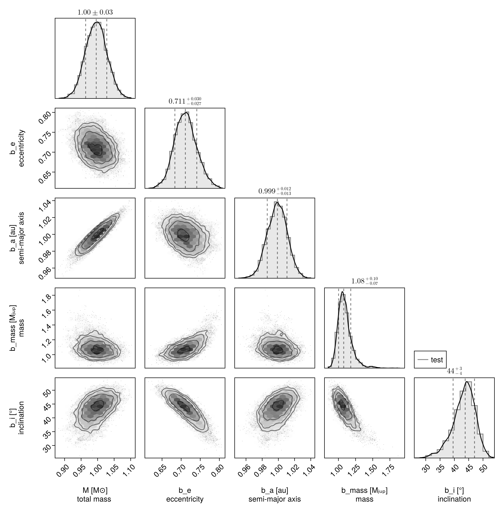
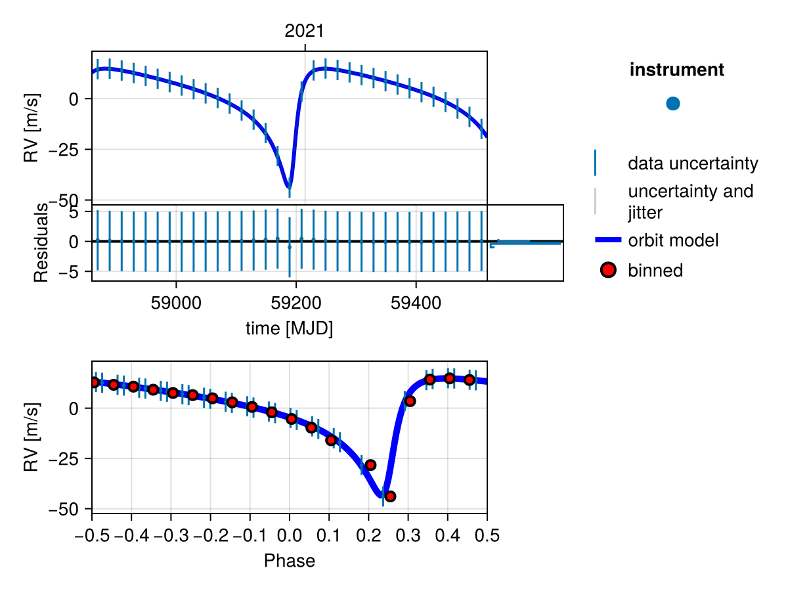
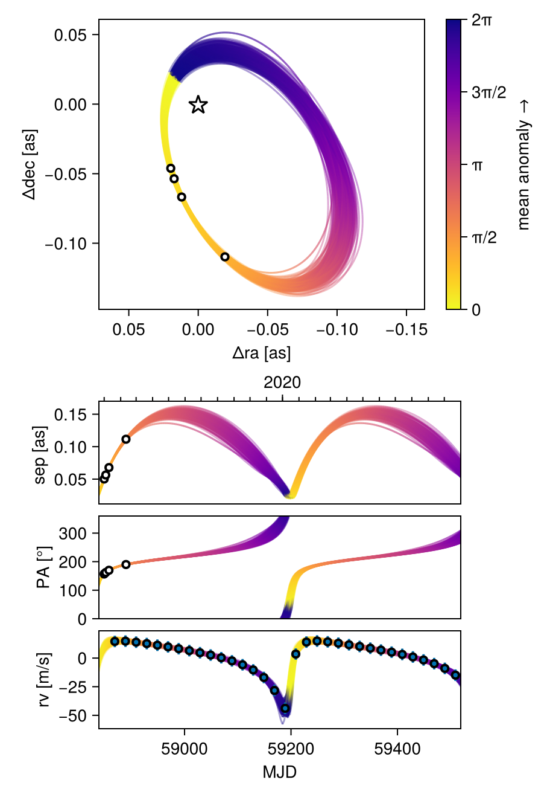

Fit Radial Velocity and Astrometry
You can use Octofitter to jointly fit relative astrometry data and radial velocity data. Below is an example. For more information on these functions, see previous guides.
Import required packages
using Octofitter
using OctofitterRadialVelocity
using CairoMakie
using PairPlots
using Distributions
using PlanetOrbitsWe now use PlanetOrbits.jl to create sample data. We start with a template orbit and record it's positon and velocity at a few epochs.
orb_template = orbit(
a = 1.0,
e = 0.7,
i= pi/4,
Ω = 0.1,
ω = 1π/4,
M = 1.0,
plx=100.0,
m =0,
tp =58829
)
Makie.lines(orb_template)
Sample position and store as relative astrometry measurements:
epochs = [58849,58852,58858,58890]
astrom = PlanetRelAstromLikelihood(Table(
epoch=epochs,
ra=raoff.(orb_template, epochs),
dec=decoff.(orb_template, epochs),
σ_ra=fill(1.0, size(epochs)),
σ_dec=fill(1.0, size(epochs)),
))PlanetRelAstromLikelihood Table with 5 columns and 4 rows:
epoch ra dec σ_ra σ_dec
┌───────────────────────────────────────
1 │ 58849 19.7702 -46.1239 1.0 1.0
2 │ 58852 17.3456 -53.619 1.0 1.0
3 │ 58858 11.9381 -66.7613 1.0 1.0
4 │ 58890 -19.2446 -109.772 1.0 1.0And plot our simulated astrometry measurments:
fig = Makie.lines(orb_template,)
Makie.scatter!(astrom.table.ra, astrom.table.dec)
fig
Generate a simulated RV curve from the same orbit:
using Random
Random.seed!(1)
epochs = 58849 .+ (20:20:660)
planet_sim_mass = 0.001 # solar masses here
rvlike = MarginalizedStarAbsoluteRVLikelihood(
Table(
epoch=epochs,
rv=radvel.(orb_template, epochs, planet_sim_mass) ,
σ_rv=fill(5.0, size(epochs)),
),
jitter=:jitter1
)
Makie.scatter(rvlike.table.epoch[:], rvlike.table.rv[:])
Now specify model and fit it:
@planet b Visual{KepOrbit} begin
e ~ Uniform(0,0.999999)
a ~ truncated(Normal(1, 1),lower=0.1)
mass ~ truncated(Normal(1, 1), lower=0.)
i ~ Sine()
Ω ~ UniformCircular()
ω ~ UniformCircular()
θ ~ UniformCircular()
tp = θ_at_epoch_to_tperi(system,b,58849.0) # reference epoch for θ. Choose an MJD date near your data.
end astrom
@system test begin
M ~ truncated(Normal(1, 0.04),lower=0.1) # (Baines & Armstrong 2011).
plx = 100.0
jitter1 ~ truncated(Normal(0,10),lower=0)
end rvlike b
model = Octofitter.LogDensityModel(test)
using Random
rng = Xoshiro(0) # seed the random number generator for reproducible results
results = octofit(rng, model, iterations=5000)Chains MCMC chain (5000×30×1 Array{Float64, 3}):
Iterations = 1:1:5000
Number of chains = 1
Samples per chain = 5000
Wall duration = 5.02 seconds
Compute duration = 5.02 seconds
parameters = M, jitter1, plx, b_e, b_a, b_mass, b_i, b_Ωy, b_Ωx, b_ωy, b_ωx, b_θy, b_θx, b_Ω, b_ω, b_θ, b_tp
internals = n_steps, is_accept, acceptance_rate, hamiltonian_energy, hamiltonian_energy_error, max_hamiltonian_energy_error, tree_depth, numerical_error, step_size, nom_step_size, is_adapt, loglike, logpost, tree_depth, numerical_error
Summary Statistics
parameters mean std mcse ess_bulk ess_tail rha ⋯
Symbol Float64 Float64 Float64 Float64 Float64 Float6 ⋯
M 0.9959 0.0321 0.0005 4817.3491 3769.9454 0.999 ⋯
jitter1 0.5177 0.3940 0.0051 3807.9603 1786.9767 1.000 ⋯
plx 100.0000 0.0000 NaN NaN NaN Na ⋯
b_e 0.7118 0.0290 0.0006 2382.2216 1739.7428 1.000 ⋯
b_a 0.9986 0.0122 0.0002 4616.4177 3624.7643 0.999 ⋯
b_mass 1.0931 0.1027 0.0022 2905.1365 1841.9744 1.001 ⋯
b_i 0.7559 0.0683 0.0014 2565.2541 1799.0539 1.000 ⋯
b_Ωy 0.9976 0.0970 0.0015 4584.9877 3452.1813 1.000 ⋯
b_Ωx 0.0809 0.0678 0.0015 2204.3954 1965.7904 1.001 ⋯
b_ωy 0.7060 0.0860 0.0014 3941.7320 2925.1419 1.000 ⋯
b_ωx 0.7105 0.0862 0.0013 4480.2867 3475.5738 0.999 ⋯
b_θy -0.9228 0.0917 0.0012 5853.3387 3100.7607 1.000 ⋯
b_θx 0.3966 0.0408 0.0005 6443.8924 3298.2071 0.999 ⋯
b_Ω 0.0810 0.0674 0.0015 2155.9828 2076.7478 1.002 ⋯
b_ω 0.7885 0.0717 0.0014 2572.3515 3040.9067 1.000 ⋯
b_θ 2.7356 0.0126 0.0002 5347.1302 3810.0171 1.000 ⋯
b_tp 58829.4146 1.3897 0.0291 2227.5136 2424.6221 1.000 ⋯
2 columns omitted
Quantiles
parameters 2.5% 25.0% 50.0% 75.0% 97.5%
Symbol Float64 Float64 Float64 Float64 Float64
M 0.9336 0.9737 0.9958 1.0170 1.0592
jitter1 0.0221 0.2006 0.4358 0.7462 1.4591
plx 100.0000 100.0000 100.0000 100.0000 100.0000
b_e 0.6573 0.6916 0.7110 0.7306 0.7724
b_a 0.9747 0.9903 0.9988 1.0069 1.0222
b_mass 0.9396 1.0260 1.0771 1.1391 1.3404
b_i 0.5990 0.7161 0.7641 0.8028 0.8714
b_Ωy 0.8245 0.9298 0.9934 1.0595 1.2018
b_Ωx -0.0681 0.0389 0.0865 0.1278 0.2008
b_ωy 0.5503 0.6472 0.7013 0.7597 0.8859
b_ωx 0.5496 0.6521 0.7069 0.7659 0.8893
b_θy -1.1152 -0.9838 -0.9175 -0.8585 -0.7551
b_θx 0.3236 0.3684 0.3945 0.4227 0.4828
b_Ω -0.0680 0.0393 0.0868 0.1277 0.1980
b_ω 0.6459 0.7400 0.7894 0.8380 0.9242
b_θ 2.7105 2.7272 2.7356 2.7441 2.7601
b_tp 58826.5669 58828.4935 58829.4393 58830.3724 58832.0246
Display results as a corner plot:
octocorner(model, results, small=true)
Plot RV curve, phase folded curve, and binned residuals:
OctofitterRadialVelocity.rvpostplot(model, results,)
Display RV, PMA, astrometry, relative separation, position angle, and 3D projected views:
octoplot(model, results)